Conjuntos
Da Vale das Araucárias Wiki
O mod não altera os pacotes do Centro Comunitário. Vários pacotes, porém, pedem peixes e itens de covo que agora aparecem com nome regional. Esta página mostra os pacotes padrão com os nomes do mod.
Conteúdo
Pacote de Peixes de Rio
River Fish Bundle · Aquário · pede 4 itens.
| Imagem | Item no mod | Original | Onde conseguir | Estação |
|---|---|---|---|---|
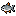 | Lambari-guaçu | Sunfish | Rio da Vila Pelicanos Rio da Floresta Cinzaseiva | |
| Jundiá | Catfish | Rio da Vila Pelicanos Rio da Floresta Cinzaseiva Bosque Secreto Pântano da Bruxa | ||
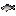 | Sairu | Shad | Rio da Vila Pelicanos Rio da Floresta Cinzaseiva | |
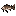 | Pintado-do-iguaçu | Tiger Trout | Rio da Vila Pelicanos Rio da Floresta Cinzaseiva |
Pacote de Peixes de Lago
Lake Fish Bundle · Aquário · pede 4 itens.
| Imagem | Item no mod | Original | Onde conseguir | Estação |
|---|---|---|---|---|
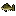 | Traíra | Largemouth Bass | Lago da Montanha | Todas as estações |
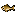 | Piava | Carp | Lago da Montanha Bosque Secreto Esgoto Covil do Inseto Mutante | Todas as estações |
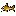 | Mandi-amarelo | Bullhead | Lago da Montanha | Todas as estações |
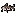 | Surubim-pintado | Sturgeon | Lago da Montanha |
Pacote de Peixes do Oceano
Ocean Fish Bundle · Aquário · pede 4 itens.
| Imagem | Item no mod | Original | Onde conseguir | Estação |
|---|---|---|---|---|
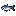 | Sardinha-verdadeira | Sardine | Oceano (Praia) | |
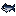 | Bonito-listrado | Tuna | Oceano (Praia) Oceano da Ilha Gengibre | |
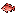 | Vermelho-cioba | Red Snapper | Oceano (Praia) | |
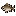 | Corvina | Tilapia | Oceano (Praia) Rios da Ilha Gengibre |
Pacote de Pesca Noturna
Night Fishing Bundle · Aquário · pede 3 itens.
| Imagem | Item no mod | Original | Onde conseguir | Estação |
|---|---|---|---|---|
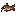 | Joaninha | Walleye | Rio da Vila Pelicanos Rio da Floresta Cinzaseiva Lagoa da Floresta Cinzaseiva Lago da Montanha | |
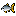 | Lambari-do-rabo-amarelo | Bream | Rio da Vila Pelicanos Rio da Floresta Cinzaseiva | Todas as estações |
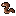 | Enguia-de-lama | Eel | Oceano (Praia) |
Pacote do Covo
Crab Pot Bundle · Aquário · pede 5 dos 10 itens.
| Imagem | Item no mod | Original | Onde conseguir | Estação |
|---|---|---|---|---|
| Cavaco | Lobster | Covo em água salgada (oceano) | Qualquer | |
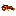 | Lagostim | Crayfish | Covo em água doce (rios e lagos) | Qualquer |
| Siri-azul | Crab | Covo em água salgada (oceano) | Qualquer | |
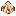 | Berbigão | Cockle | Covo em água salgada (oceano) | Qualquer |
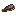 | Mexilhão | Mussel | Covo em água salgada (oceano) | Qualquer |
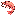 | Camarão-rosa | Shrimp | Covo em água salgada (oceano) | Qualquer |
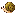 | Aruá | Snail | Covo em água doce (rios e lagos) | Qualquer |
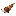 | Caramujinho | Periwinkle | Covo em água doce (rios e lagos) | Qualquer |
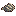 | Ostra-do-mangue | Oyster | Covo em água salgada (oceano) | Qualquer |
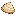 | Marisco-branco | Clam | Covo em água salgada (oceano) | Qualquer |
Pacote de Peixes Especiais
Specialty Fish Bundle · Aquário · pede 4 itens.
| Imagem | Item no mod | Original | Onde conseguir | Estação |
|---|---|---|---|---|
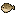 | Baiacu-pintado | Pufferfish | Oceano (Praia) Oceano da Ilha Gengibre | |
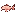 | Bagre-cego | Ghostfish | Minas (andares 20 e 60) Derrubado por fantasmas | Todas as estações |
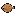 | Linguado-areia | Sandfish | Deserto Calico | Todas as estações |
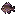 | Cará-pixuna | Woodskip | Bosque Secreto Fazenda da Floresta | Todas as estações |
Pacote de Pesquisa de Campo
Field Research Bundle · Quadro de Avisos · pede 4 itens (os outros três não são do mod).
| Imagem | Item no mod | Original | Onde conseguir | Estação |
|---|---|---|---|---|
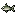 | Lambari-do-mato | Chub | Rio da Floresta Cinzaseiva Lago da Montanha | Todas as estações |
Pacotes remixados
Com a opção de pacotes remixados do jogo, alguns pacotes mudam e podem pedir outros peixes. Em qualquer caso, o item pedido é o mesmo do jogo: só o nome e o sprite exibidos são os do mod.
Itens novos e pacotes
As lavouras, as árvores e os itens novos do mod não fazem parte de nenhum pacote. Eles também ficam fora da coleção de envios e das vendas aleatórias, para não mudar as metas do jogo.